Overview
I worked across the Results Portal, Cancel Withdrawal and Quick Deposit, and In-Play Enhancements projects, on web, iOS and Android.
I helped transition bet365 from a graphic-focused web design team to a digital product UX/UI team during a period of industry transformation, introducing tools and processes that improved customer experience, satisfaction scores and revenue, and delivered features to 6 million daily active users across iOS, Android and web.
I also helped design and implement a new digital design system and brand identity business wide.
Projects
- Results Portal (web, iOS and Android app)
- Cancel Withdrawal and Quick Deposit (web, iOS and Android app)
- In-Play Enhancements (web, iOS and Android app)
Responsibilities
- Support the transition from a graphic-focused web design team to a UX/UI team
- Introduce UX/UI tools and processes (user testing, prototyping and more)
- Advocate strong team culture, communication and collaboration
- Define and deliver designs for assigned features and briefs across app and web
- Review and consolidate multiple products and platforms into a consistent, unified experience
- Design and implement a new digital design system and brand identity business wide
Results Portal
Over 100,000 live events are hosted on bet365 each year. Direct customer feedback showed that users wanted to be able to review the results of past events that are no longer listed on the bet365 site, from their app.
I designed an intelligent mobile search engine that lets users find the results of individual sporting events and view them in a simple, clean UI. An intuitive, painless experience was key: quick and easy access to the event results, statistics and details of the bets offered against each event.
Throughout the project I ran workshops with product, sports, gambling and technology stakeholders from around the business, refining requirements and understanding technical constraints. When the solutions were designed and ready for implementation, I ran design walk-through sessions to hand the project over for development.
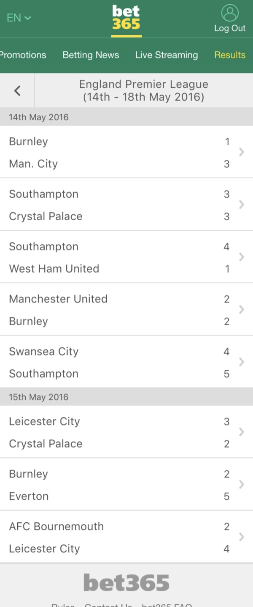
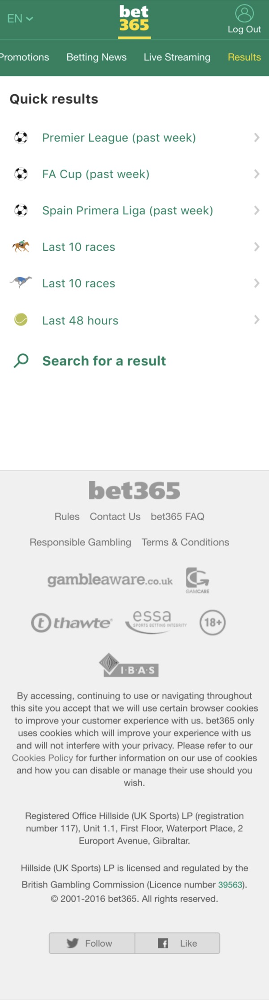
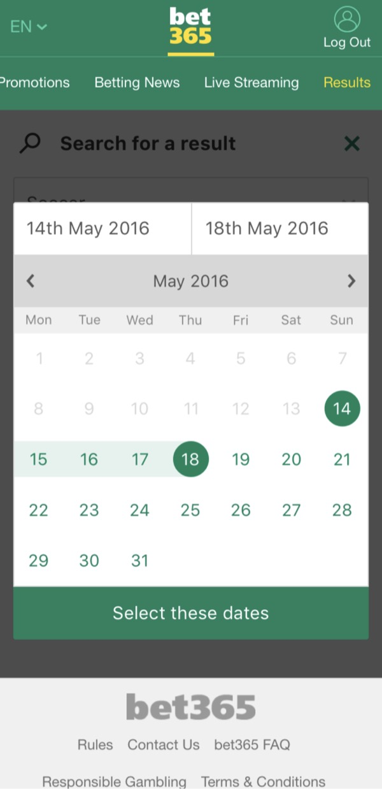
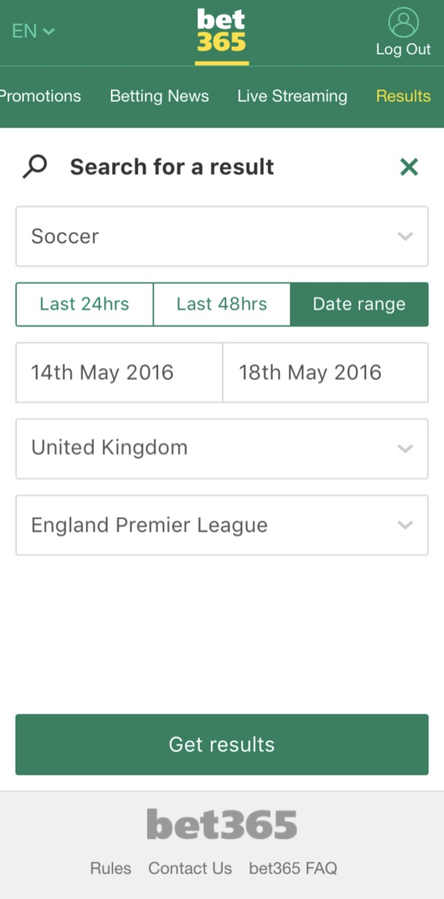
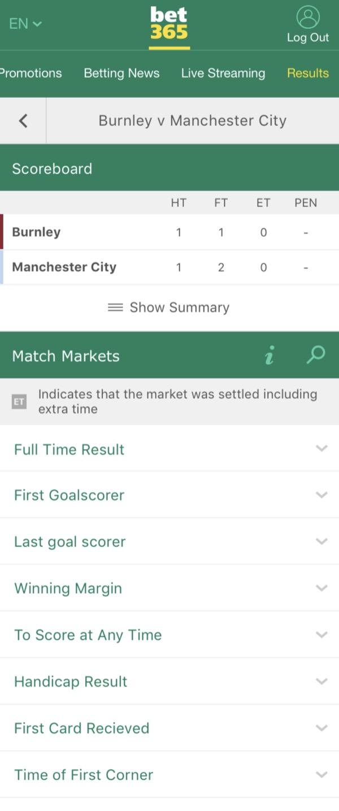
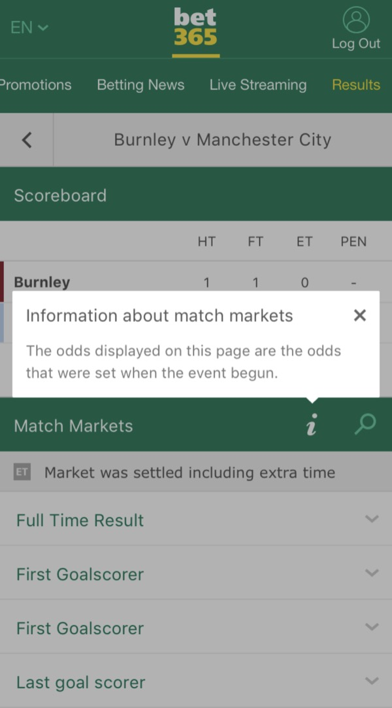
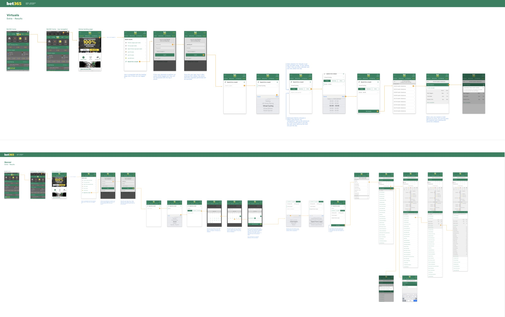
Cancel Withdrawal and Quick Deposit
Analytics showed that users regularly abandoned bets they were about to place when their accounts were low on funds or empty.
After conducting my own research, I found one of the main reasons: users didn't want to be taken into a separate deposit journey to add funds, because the deposit process took too long. By the time they had deposited, the bet they wanted would have different odds or no longer be available.
I designed the Cancel Withdrawal and Quick Deposit feature as the solution, bringing convenience for the user and increased revenue for the business.
With the new feature, users could make a quick deposit using their saved payment details, or cancel a pending withdrawal from a previously won bet, within the same journey as the bet they were placing. Their odds were preserved until the deposit was complete. A quick, easy way to deposit funds made placing a bet frictionless from end to end and kept the user engaged with their bet.
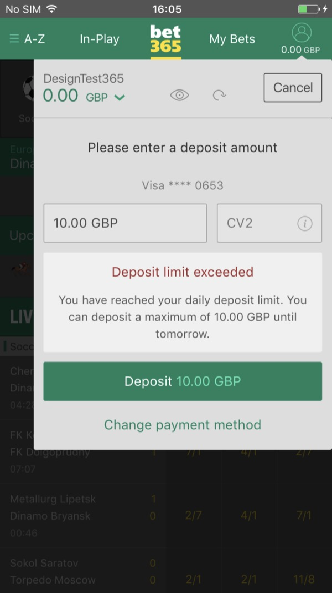
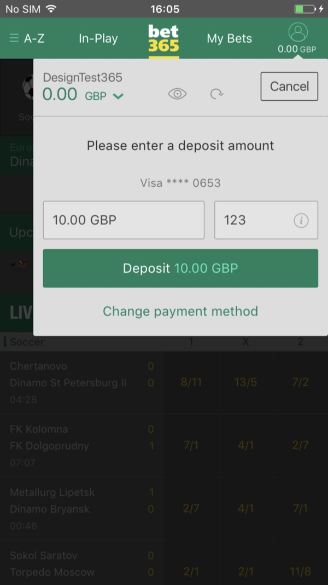
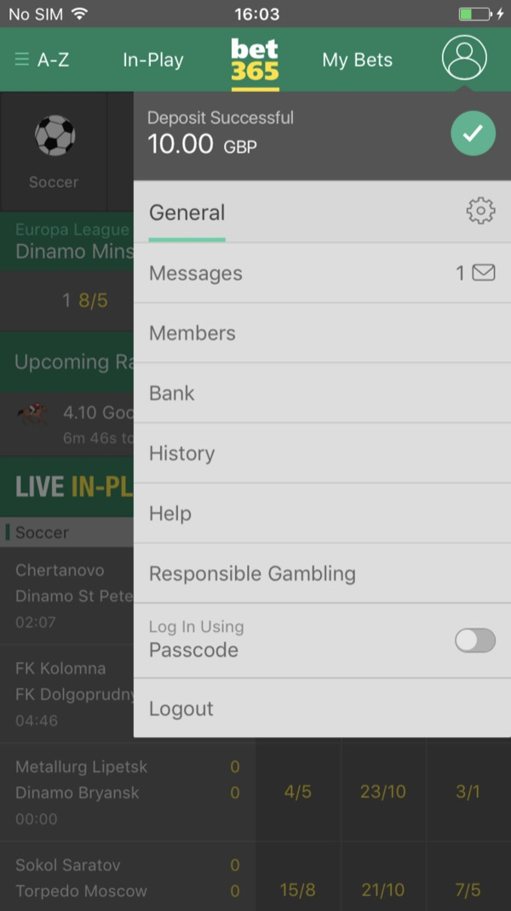
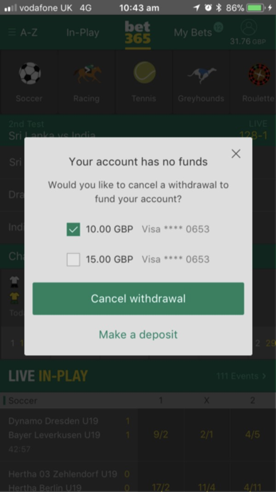
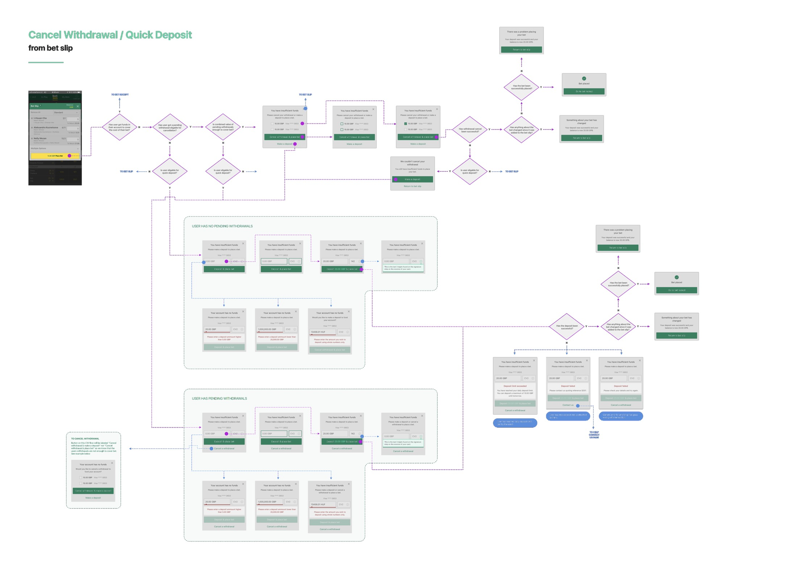
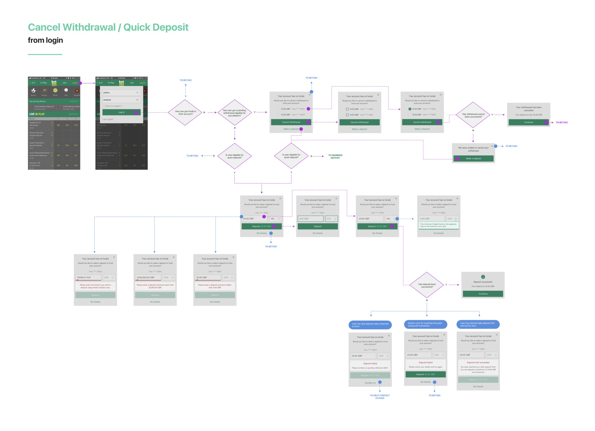
In-Play Enhancements
The In-Play section of bet365's sports book is where most bets are placed. I identified that betting on some sports was a far better experience than on other, more popular sports such as soccer, tennis, golf and racing.
Some sports were only displayed to users in a cell format, with no way to watch and bet at the same time. I reviewed analytics to understand which sports were the most popular, then redesigned the In-Play section to prioritise them. I designed more betting options and sport-specific layouts, and let users watch and bet on more events at the same time, which is especially popular for sports like racing where event turnover is high.
I also identified that the event streams drive a huge part of the traffic to In-Play, so the streaming filter, containing every streamed event across all sports, was enhanced and brought to the front of the carousel instead of sitting at the end of it.
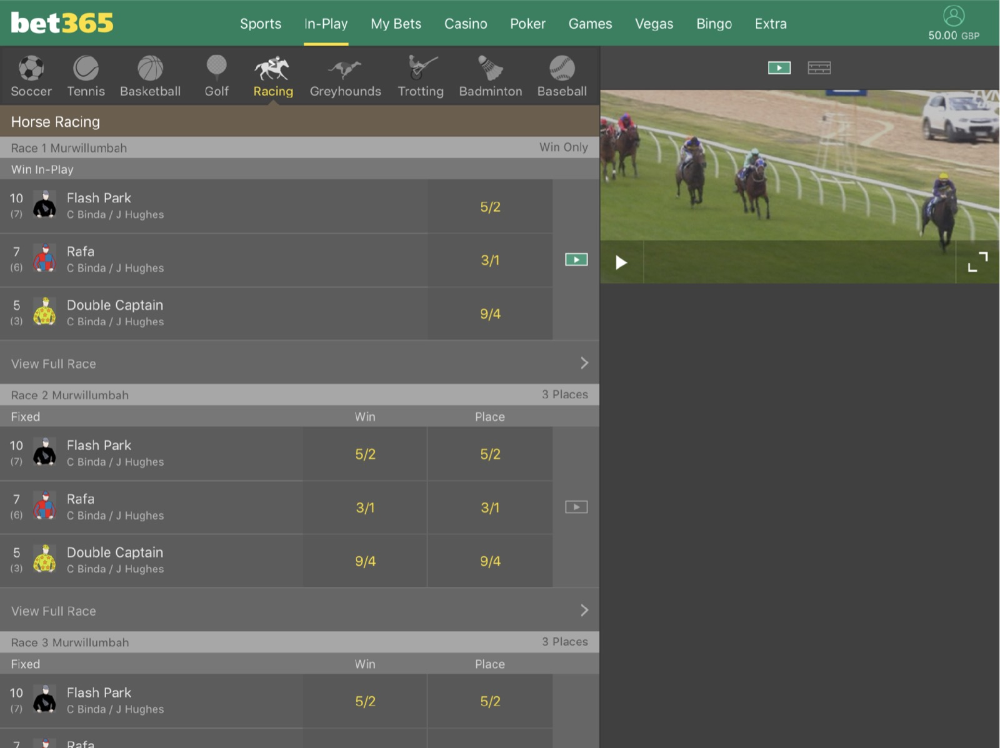
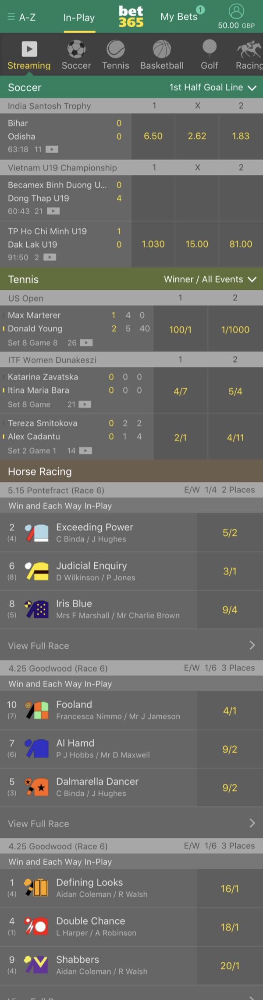
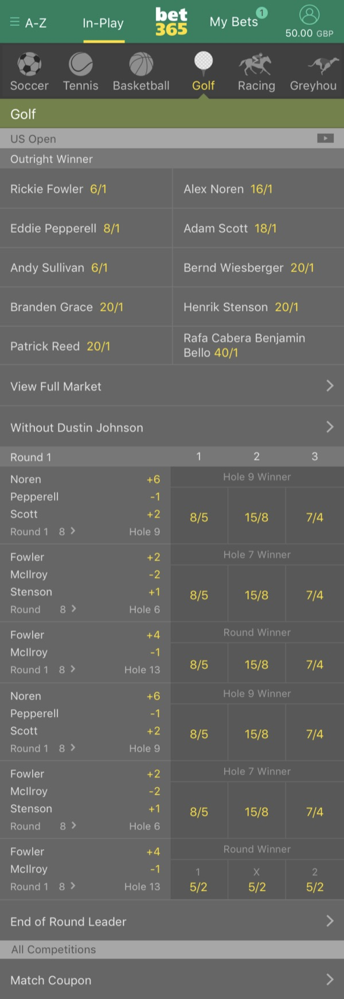
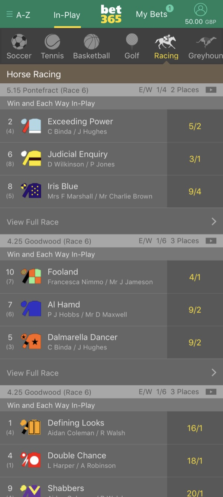
Gallery
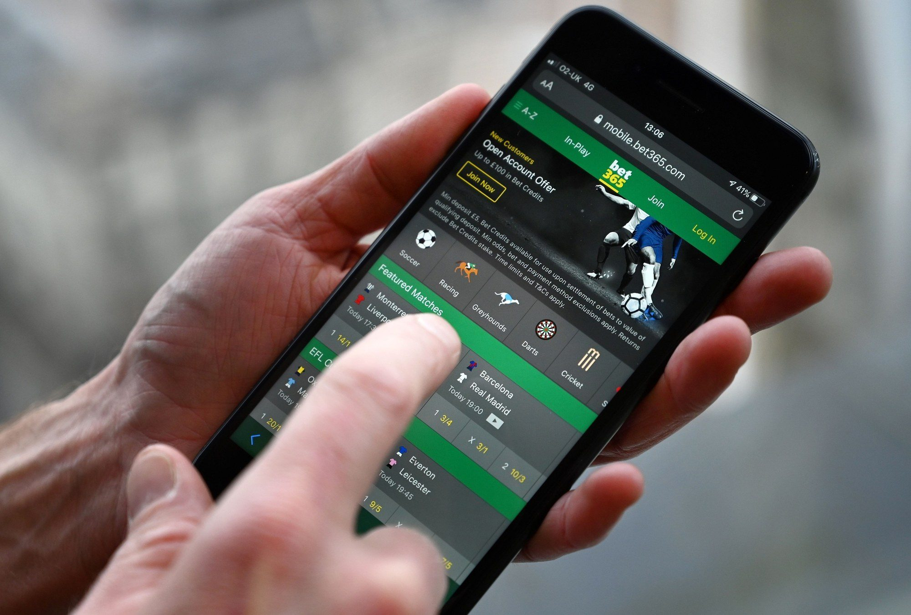

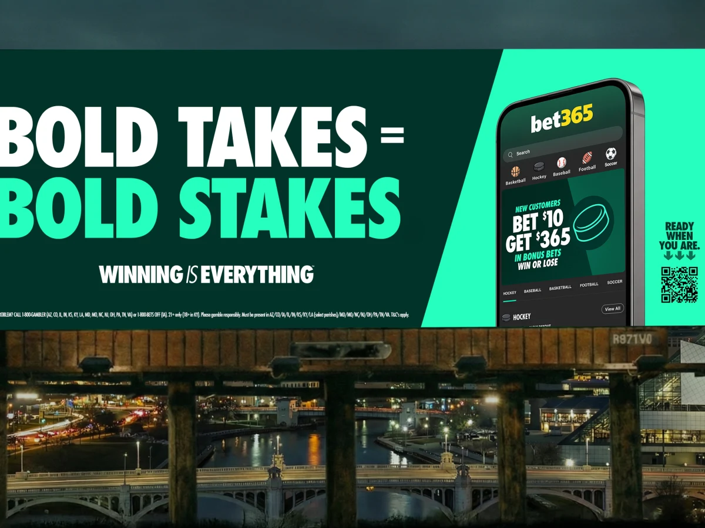